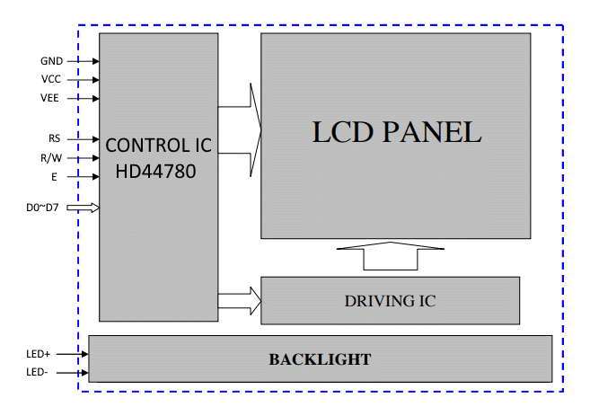
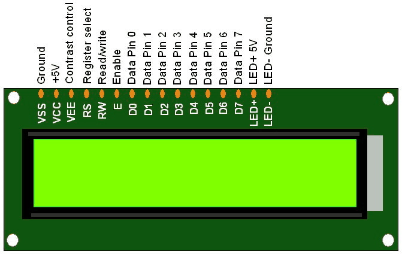
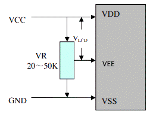

LCD modules are very commonly used in most embedded projects, the reason being its cheap price, availability and programmer friendly.
It is very common for these LCD modules to utilize Hitachi HD44780 controller (datasheet).
Block Diagram
Wiring It Up
| Pin | Label | Description |
|---|---|---|
| 1 | Ground (GND) | Connect to ground to power HD44780 controller |
| 2 | +5V (VCC) | Connect to +5V to power HD44780 controller |
| 3 | Contrast Control (VEE) | Connect adjustable voltage to control screen contrast. Use a 20~50K variable resister (VR) wired between VCC and GND.  |
| 4 | Register select (RS) | Connect signal for selecting register: 0 (low): enable instruction register 1 (high): enable data register |
| 5 | Read/Write (R/W) | Connect signal for selecting data direction: 0 (low): write data to HD44780 controller 1 (high): read data from HD44780 controller |
| 6 | Enable (E) | Connect signal to tell HD44780 controller to start data read/write |
| 7-14 | Data Pins (DB0 - DB7) | 8 data lines used to write or read data from HD44780 controller |
| 15 | LED +5V | Connect to +5V to power the screen's back light |
| 16 | LED Ground | Connect to ground to power the screen's back light |
Sending Commands
When the LCD is first powered on, we must send it commends in order to initialize the controller. For example, we need to tell the control how many lines the display has. And to turn on the display. And if we want the screen to display a cursor or not. This is done by writing data to the instruction register.
To write data to the instruction register:
- Set Read/Write (R/W) pin to low
- Set the register select (RS) pin low
- Set the data pins to value of command (instruction) to want to execute
- Last toggle the enable (E) pin high then low
Let's Dissect Code
Arduino provides a library (LiquidCrystal Library) to simplify working with an LCD module. Let's walk through the HelloWorld.ino example that comes with the LiquidCrystal Library. Note that I have modified the HelloWorld example to use 8 instead of 4 data lines to talk to LCD to simplify things a bit.
Line 1 tells the program that we want to use the LiquidCrystal Library. In line 5 we start to use the LiquidCrystal Library by declaring a variable called lcd passing the pin numbers that have been used to wire up the LCD module to the Arduino.
Declaring this variable calls the constructor method of the LiquidCrystal class.
The constructor then calls init() with fourbitmode = 0, rw = 255 along with the pin values passed to the constructor.
The init method stores the pin numbers for later use as well tells the library to use 8 bit mode. Then it calls begin method to initialize LCD module. It defaults to 16 columns, 1 line and 5x8 dot characters.
The begin method does a lot. It saves the number of lines and character (dot) size as well as computes the offsets ( via setRowOffsets method ) where each row starts. The next couple of lines setup the ardunio pin modes for data output. It is not common for an ardunio project to read data from the LCD module thus we R/W pin is rarely used and just wired to ground. The library does allow you to use the R/W if you needed, but it defaults to not used.
Now we get to the first code that actually talks to the LCD module. In preparation to send the first command to LCD module, the begin method sets the RS pin to low so it can write to the instruction register. As well as sets the enable pin low. There is an if statement that to check if we are using 4 bit or 8 bit mode to talk to the LCD. We are using 8 bit mode so we will send the full 8 bit command at once. The commmand method takes the byte passed to it and places each of the bits on the data lines. It then pulses the enable line writing a low to enable pin followed by a high for one microsecond and then back to low. This triggers the LCD to read the data lines.
Let's take a closer look at the command that is sent to the LCD. By looking in LiquidCrystal.h source file, we can see that LCD_FUNCTIONSET contains the value 0x20 which is 0010 0000 in binary. Or in other words, sets bit 5 high. The bits are numbered zero to seven starting from the right side. The pipe "|" operator is know as bitwise OR operation in C++.
The bitwise OR operator will combine LCD_FUNCTIONSET and _displayfunction into a new value that will have **** FINISH THIS THOUGHT *** So we need to figure out what value is in _displayfunction at this time. Below are the three code snippets that set a value in _displayfunction.
At this point we know we are using 8 bit mode, so the first code snippet would set
_displayfunction = LCD_8BITMODE | LCD_1LINE | LCD_5x8DOTS. And below we can see the values of LCD_8BITMODE, LCD_1LINE, and LCD_5x8DOTS.
LCD_8BITMODE | LCD_1LINE | LCD_5x8DOTS
hex: 0x10 | 0x00 | 0x00
binary: 0001 0000 | 0000 0000 | 0000 0000
LCD_FUNCTIONSET = 0x20 = 0010 0000
0010 0000 | 0001 0000 = 0011 0000
First command sent: 0011 0000
Which is instruction "Function set", we can tell this by the value of the bits 5-7 "001". Bit 4 sets the
data length, 1 = 8 bit mode, 0 = 4 bit mode. Bit 3 set is number of lines, 1 = two line, 0 = one line. Bit 2 set dot characters,
1 = 5x10 dots, 0 = 5x8 dots. Bits 1 and 0 are not used and thus ignored.
The first command sets the data length to 8 bit mode, number of lines to one, and dot characters to 5x8.
_displaycontrol = LCD_DISPLAYON | LCD_CURSOROFF | LCD_BLINKOFF;
_displaycontrol = 0x04 | 0x00 | 0x00;
_displaycontrol = 0000 0100 | 0000 0000 | 0000 0000;
command(LCD_DISPLAYCONTROL | _displaycontrol);
LCD_DISPLAYCONTROL = 0x08
LCD_DISPLAYCONTROL = 0000 1000
0000 1000 | 0000 0100 = 0000 1100
Which is instruction "Display on/off control", we can tell this by the value of the bits 3-7 "0000 1". Bit 2 sets display
on off, 1 = on, 0 = off. Bit 1 turns the cursor on or off, 1 = on, 0 = off. Bit 0 tells teh cursor to blink or not, 1 = blink,
0 = not blink.
command(LCD_CLEARDISPLAY);
Next command sent is 0000 0001, "Clear display".
_displaymode = LCD_ENTRYLEFT | LCD_ENTRYSHIFTDECREMENT;
// set the entry mode
command(LCD_ENTRYMODESET | _displaymode);
LCD_ENTRYMODESET = 0x04 = 0000 0100
LCD_ENTRYLEFT = 0x02 = 0000 0010
LCD_ENTRYSHIFTDECREMENT = 0x00 = 0000 0000
Next command sent is 0000 0110, "Enter mode set". Bit 1 sets cursor move direction, 1 = right, o = left. Bit 0 specifies display shift, 1 = shift, 0 = no shift.
| Instruction | Data Bits | Description | |||||||
|---|---|---|---|---|---|---|---|---|---|
| 7 | 6 | 5 | 4 | 3 | 2 | 1 | 0 | ||
| Clear display | 0 | 0 | 0 | 0 | 0 | 0 | 0 | 1 | Clears entire display and sets cursor pos to 0,0 |
Additional Resources
- LCD Overview by Adafruit.
- Basic Character LCD Hookup Guide by Sparkfun.
- LCD Tutorial from Arduino